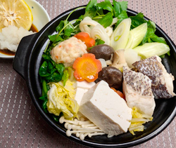

鯛ちり鍋
- 調理時間： 40分
- （一人当たり）
- カロリー：518kcal
- たんぱく質：36.6g
- 脂質：24.2g
- 炭水化物：39.0g
- 塩分：1.7g


＜2人分＞
- ・真鯛
- 2切れ(150g位)
- ・木綿豆腐
- 100g
- ・白菜
- 2枚(150g)
- ・長ネギ
- 1～2本
- ・キノコ
（今回はエノキ、マイタケ、椎茸） - 80g
- ・ニンジン
- 50g
- ・三つ葉
- 50g
- ・がんもどき
- 2個
- ・ゆでうどん
- 1袋
A
- 水
- ひたひたの水
- 出し昆布
- 10cm
- 塩
- 少々
- 大根おろし
- お好みで
- ユズ
- お好みで
- ポン酢
- お好みで


- 【Aの食材・下準備する】
真鯛は一口大に切る。 - 白菜は食べやすい大きさに切る。
長ネギは斜め切りにする。
キノコ類は石づきを取り、手でほぐす。
ニンジンは飾り切りにする。
三つ葉は根元を切り落とし、4㎝幅に切る。
がんもどきは熱湯をかけて油抜きしておく。
豆腐は食べやすい大きさに切る。 - 鍋に水、昆布をいれて熱し、沸騰直前で昆布を取り出す。塩少々を加え、②の食材、真鯛、うどんを加えて、火が通るまで中火で煮る。
- ポン酢を準備して、大根おろし、ユズはお好みで添えていただく。
鯛ちり鍋
ちり鍋とは、白身魚や野菜、豆腐などの具材を水炊きにした鍋料理のことをいいます。切身の魚を鍋で煮ると、「ちりちり」と身が縮れる様子から「ちり鍋」と呼ばれるようになりました。日本の鍋料理は、肉を「しゃぶしゃぶ」と洗う様子が由来になった「しゃぶしゃぶ」や、水菜の「ハリハリ」という食感から名づけられた「ハリハリ鍋」など、愉しげなものが数々ありますね。
冬本番。寒い日に食べたくなるのは温かい鍋料理。具材や味付けを変えれば毎日楽しめます。